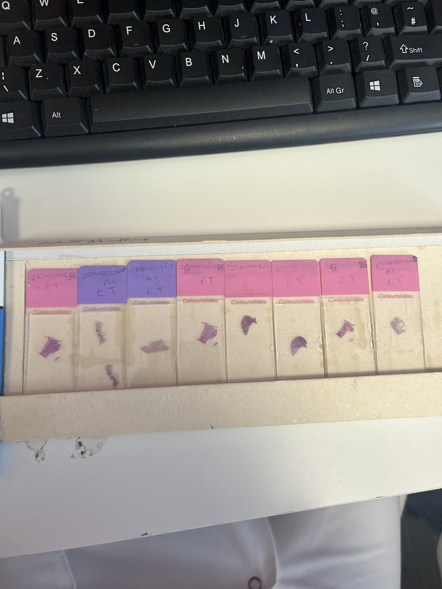
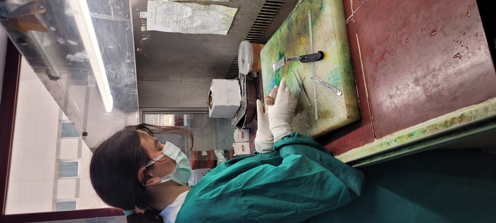

MSC DISSERTATION
ARCHIVE
Academic archive
Dissertations, presentations, posters, coursework, internship work, certificates and laboratory media.
For viewing only — reproduction or redistribution is not permitted.
Original academic files are provided for personal review and professional assessment. Redistribution, republication or commercial use is not permitted without permission.
DISSERTATIONS
BSC DISSERTATION
BSc Dissertation — Pancreatic Cancer Metabolism
PRESENTATIONS
MSC RESEARCH PRESENTATION
MSc LIMD1–ARIH1 Presentation
GENOMICS COURSE
Genomics Course Presentation
POSTERS
RESEARCH METHODS
AFM / Net4 Research Methods Poster
CANCER RESEARCH
Cervical Cancer Poster
COURSEWORK
GROUP COURSEWORK
Research Methods — Statistics Group Project
Group coursework completed for Research Methods, focused on statistical analysis and interpretation.
COURSEWORK ASSIGNMENT
CANM907 Biological Therapies
Coursework analysis of published glioblastoma immunotherapy evidence.
COURSEWORK ASSIGNMENT
Case Study
Intratumour heterogeneity, biomarker discovery and resistance.
COURSEWORK ASSIGNMENT
Clinical Trial Design
Mock CLL trial rationale and published evidence appraisal.
COURSEWORK ASSIGNMENT
Critical Analysis#
Literature review of DCIS progression.
COURSEWORK ASSIGNMENT
CAR-T Literature Review
Biological Therapies review of efficacy, failure modes and engineering strategies.
INTERNSHIP WORK
BIOINFORMATICS INTERNSHIP
Bioinformatics / Variant Calling Internship Work
CERTIFICATES
Certificates
Certificates are issued by their respective organisations. The descriptions below summarise the training completed; download links do not imply ownership of the certificate material by the portfolio author.
BIOINFORMATICS FOUNDATIONS
Bioinformatics 201
Genomac Institute Inc. · 2 weeks
GENOMICS & BIOINFORMATICS RESEARCH
International Virtual Research Internship in Genomics & Bioinformatics
Genomac Institute Inc. · 6 months
BIOINFORMATICS FOUNDATIONS
Bioinformatics 201
Provider: Genomac Institute Inc. · Duration: 2 weeks
Introductory bioinformatics training completed before the longer research internship. The course provided a foundation in bioinformatics concepts and computational analysis, preparing me to work more confidently with biological sequence data and research-oriented workflows.
I completed this introductory course first, then progressed into the longer Genomics & Bioinformatics Research Internship to apply and extend that knowledge in a research-focused setting.
GENOMICS & BIOINFORMATICS RESEARCH
International Virtual Research Internship in Genomics & Bioinformatics
Provider: Genomac Institute Inc. · Duration: 6 months
A six-month research-focused internship undertaken after completing Bioinformatics 201, designed to apply and develop my bioinformatics knowledge through structured genomics research activities. The programme focused on biological research-question formulation, genomics and bioinformatics study design, application of computational tools within a research context, analysis of omics datasets, scientific communication and project development.
My documented project work included public sequencing-data retrieval, FastQC quality assessment, Trimmomatic read trimming, reference-based mapping to chromosome 17 of GRCh38 in Geneious, coverage interpretation, and exposure to variant-calling and effect-prediction workflows.
This internship built directly on the introductory training by giving me sustained practice applying bioinformatics methods to research-oriented datasets and interpreting analytical limitations.
GENOMICS & DATA SCIENCE
Introduction to Genomic Technologies
Provider: Johns Hopkins University — Coursera
Covered foundations of genomics and molecular biology, including genome organisation, DNA structure, transcription, translation, PCR, next-generation sequencing and sequencing applications. The course also introduced computational biology, algorithms, software concepts, reproducibility, statistics, experimental design, confounding, genomic-data interpretation and data-science principles.
Completed: January 2024 · Final grade: 94%
EPIDEMIOLOGY & RESEARCH METHODS
Epidemiology: The Basic Science of Public Health
Provider: University of North Carolina at Chapel Hill — Coursera
Introduced core epidemiological principles including disease frequency, prevalence and incidence, risk and rates, study design, measures of association, confidence intervals and causality. The course covered experimental, cohort, case-control, cross-sectional and ecological study designs, interpretation of odds ratios and the Bradford Hill criteria.
Completed: September 2020 · Final grade: 90%
LABORATORY SAFETY
First Aid for Laboratory Workers
Provider: Queen Mary University of London
Laboratory-specific first-aid training covering incident assessment and reporting, contacting first aid and emergency services, management of an unresponsive casualty, recognition of anaphylaxis, and response to laboratory injuries including bleeding, burns and biological contamination.
Assessment pass mark: 80%
FIRE SAFETY
Fire Safety Awareness
Provider: Queen Mary University of London
Training in fire legislation, fire science, emergency procedures and hazard identification within university environments, followed by a knowledge assessment.
Assessment pass mark: 80%
HEALTH & SAFETY
Health and Safety Essentials
Provider: Queen Mary University of London
University health-and-safety induction covering key responsibilities, procedures and arrangements designed to maintain a safe study and working environment, followed by an assessment to consolidate the training.
LABORATORY WASTE MANAGEMENT
Safe Management of Laboratory Hazardous Waste
Provider: Queen Mary University of London
Training in identifying laboratory waste types, understanding the legislation underpinning hazardous-waste management, and selecting appropriate routes for storage, packaging, transport and disposal. The course also covered emergency response when handling laboratory waste.
Assessment pass mark: 80%
CLINICAL RESEARCH TRAINING
Good Clinical Practice ICH-GCP — Full Certificate Course
Provider: PV Drug Safety Academy — Udemy · Course length: 2 hours 31 minutes · 8 sections · 21 lessons
Training in the fundamentals and principles of ICH-GCP, including the roles and responsibilities of IRB/IEC, investigators and sponsors, protocol compliance, informed consent, participant safety, investigational-product management, randomisation and unblinding, quality management, safety reporting, Investigator’s Brochure, clinical-trial protocols and management of essential trial records.
The course also covered sponsor oversight, communication with ethics and regulatory bodies, non-compliance, data and record management, and core documentation requirements for clinical trials.
This is formal ICH-GCP training and does not represent hands-on clinical-trial experience.
CLINICAL GENOMICS
Practical Genomics and Genetic Testing for the Non-Geneticist
Provider: St George’s, University of London
Professional genomics training focused on applying genomic testing in clinical practice. Topics included human genome composition and variation, inheritance patterns, genomic testing technologies, next-generation sequencing panels, whole-genome sequencing, MLPA, eligibility for genomic testing, consent for genetic testing, interpretation of genomic test results, clinical management implications, cascade screening, legal and ethical considerations in handling genomic data, and use of genomics-support resources.
LABORATORY MEDIA
BIOMED LABORATORY LTD
Biomed Laboratory Ltd
Sanitized web previews from histology experience.

AKDENIZ UNIVERSITY PATHOLOGY INTERNSHIP
Akdeniz University Pathology Internship
Pathology training photograph and sanitized video preview.

A second original recording is withheld pending resolution of an apparent handwritten credential note.